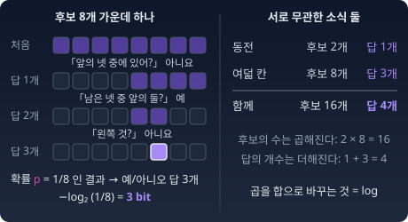

놀라움과 정보
분류 모델을 학습시킬 때 늘 줄이는 cross-entropy loss 안에도, 두 분포가 얼마나 다른지 재는 KL 발산 안에도 log가 들어 있다. KL 발산은 현실 p와 모형 q에 대해 KL(p‖q) = Σ pi log(pi/qi)라는 숫자를 내놓는 "비대칭 거리"다. 가운데 ‖는 앞 칸(현실 p)과 뒤 칸(모형 q)을 가르는 칸막이이고, 두 칸을 바꾸면 값이 달라진다. 그런데 그 숫자는 정확히 무엇을 재는가? 왜 하필 log인가? 왜 KL은 늘 0 이상인가? 실마리는 전화선으로 글자를 보내던 공학자의 물음에서 나왔다.
놀라움: 예상 밖의 일은 정보가 크다
“해가 뜨는 건 뉴스가 안 되는데 일식은 뉴스가 된다. 놀라움을 숫자로 쓸 수 있나?”
드문 일일수록 뉴스가 된다는 것은 누구나 안다. 기자들 사이에는 "개가 사람을 물면 뉴스가 안 되고, 사람이 개를 물면 뉴스가 된다"는 말이 전해진다. 하지만 "얼마나 놀라운가"는 느낌이라, 이대로는 두 소식 가운데 어느 쪽이 몇 배 놀라운지 말할 수 없다. 느낌 대신 셀 수 있는 것이 필요하다.
다음 글자 맞히기: 섀넌이 센 것
1951년 벨 연구소의 클로드 섀넌(Claude Shannon)은 논문 「인쇄된 영어의 예측과 엔트로피」에서 이 물음을 실험으로 바꿨다. 피험자에게 처음 보는 영어 글을 앞에서부터 한 글자씩 맞히게 한다. 맞히면 다음 글자로 넘어가고, 틀리면 틀렸다고만 알려 주어 다시 맞히게 한다. 그리고 글자마다 몇 번째 추측에서 맞혔는지를 적는다.
논문에 실린 한 문장(“THERE IS NO REVERSE ON A MOTORCYCLE …”, 공백까지 102기호)에서 피험자는 79개를 첫 추측에 맞혔고, 다섯 번 넘게 걸린 것은 여덟 개뿐이었다. 틀리는 곳은 주로 단어의 첫머리였다. MOTORCYCL까지 읽은 사람에게 다음 글자 E는 굳이 알려 주지 않아도 되는 소식이고, 새 단어의 첫 글자는 여러 번 물어야 겨우 알아내는 소식이다.
섀넌은 한 걸음 더 나아갔다. 첫 추측에 맞힌 글자는 지우고 나머지만 남긴 줄로도 원래 글을 되살릴 수 있다. 받는 쪽에 똑같이 추측하는 쌍둥이가 있다면, 쌍둥이도 같은 자리에서 같은 글자를 맞힐 것이기 때문이다. 그러니 글자 하나가 알려 주는 양은 그 글자가 받는 쪽에게 얼마나 맞히기 어려웠는지, 곧 받는 쪽이 그 글자에 매긴 확률에 달려 있다. 이렇게 재어 보니 앞 문맥을 충분히 아는 사람에게 영어 글자 하나는 평균 1비트 안팎이었다. 알파벳 26개를 같은 확률로 보면 4.7비트였을 양이다.
스무고개: 답의 개수로 재기
"얼마나 맞히기 어려운가"를 숫자로 만드는 데는 스무고개가 가장 단순한 시험대다. 질문이 예/아니오뿐이라 답 하나가 셀 수 있는 한 단위가 되기 때문이다. 똑같이 그럴듯한 후보가 8개 있으면, 후보를 반씩 가르는 질문 세 번으로 답을 찾는다. 확률이 1/8인 결과를 알리는 데는 예/아니오 답 3개가 든다. 후보가 2개(확률 1/2)면 답 1개, 1,024개(확률 1/1024)면 답 10개다. 확률이 1/2k이면 답의 개수는 k = log₂(1/p) = −log₂ p다.

서로 아무 상관이 없는 소식 두 개를 한꺼번에 들으면 어떨까? 동전의 앞뒤(후보 2개)와 여덟 칸 가운데 한 칸(후보 8개)를 함께 알리면, 가능한 경우는 2 × 8 = 16가지이고 답은 1 + 3 = 4개다. 후보의 수는 곱해지는데 답의 개수는 더해진다. 확률로 말하면, 독립인 두 사건이 함께 일어날 확률은 곱해지고(P(A∩B) = P(A)·P(B)), 그 소식을 알리는 데 드는 답은 더해진다.
확률이 1/6처럼 1/2k 꼴이 아니면 −log₂ p는 2.58처럼 정수가 아닌 값이 된다. 질문은 정수 번만 할 수 있는데, 이 값은 무엇을 세는 것일까? 이것은 아래 문제 1에서 따져 본다.
왜 −log인가
이제 이 양을 확률 p의 함수로 쓰고 싶다. 확률이 작을수록 커져야 한다는 조건만 보면 후보는 많아 보인다. 1/p도 되고, 1 − p도 될 것 같다.
그런데 스무고개에서 본 약속, 곧 독립인 사건 두 개가 함께 일어나면 그 양은 더해져야 한다는 조건을 더하면 후보가 거의 다 떨어진다. 확률이 0.1인 독립 사건 두 개로 시험해 보자. 함께 일어날 확률은 0.01이다. 1/p는 따로 더하면 10 + 10 = 20인데, 함께는 1/0.01 = 100이다. 1 − p는 따로 더하면 0.9 + 0.9 = 1.8인데, 함께는 0.99다. 둘 다 탈락이다.
곱을 덧셈으로 바꾸는 함수가 필요하다. 확률이 작을수록 커진다는 조건 아래에서, 그런 함수는 −c·log p 꼴뿐이다. c는 양의 상수다. 이 유일성은 아래 문제 2에서 증명한다.
정의
이 양을 결과 x의 정보량이라 부르고, 흔히 놀라움(surprisal)이라고도 부른다. 거의 확실하던 일이 일어나면 놀라지 않고 드문 일이 일어나면 크게 놀란다는 느낌에서 붙은 이름이다. 하지만 이 장에서 "놀라움"은 느낌이 아니라 늘 이 숫자, 곧 그 결과를 전해 듣는 쪽이 새로 받아야 하는 예/아니오 답의 개수를 가리킨다. 그리고 p는 전해 듣는 쪽이 그 결과에 매긴 확률이다. MOTORCYCL 뒤의 E가 영어를 아는 사람에게는 거의 0 bit이고 영어를 모르는 사람에게는 큰 소식인 것도 그래서다. 듣는 쪽이 매긴 확률이 현실과 어긋나면 어떻게 되는지는 교차엔트로피에서 다룬다.
밑에 따라 단위가 붙는다. log₂를 쓰면 bit(binary digit, 예/아니오 답 하나)다. 동전 앞면(p = ½)의 놀라움이 정확히 1 bit다. 자연로그 ln을 쓰면 nat(natural unit)이다. 수학 계산이 깔끔해서 이 책의 식은 대부분 nat이다. 둘은 상수배 차이다. 1 nat = 1/ln 2 ≈ 1.443 bit, 1 bit = ln 2 ≈ 0.693 nat. numpy의 np.log는 자연로그다. bit가 필요하면 np.log2를 쓴다.
불러오는 중…
ML에서: 정답에 준 확률의 놀라움이 곧 loss
분류 모델은 사진 한 장을 보고 후보마다 확률을 내놓는다. 실제 정답 「고양이」에 0.8을 주었다면, 그 사진에서 모델이 받은 놀라움은 −ln 0.8 ≈ 0.22 nat이다. 0.01만 주었다면 −ln 0.01 ≈ 4.61 nat이다. 분류 모델을 학습시킬 때 사진 한 장마다 매기는 loss가 바로 이 놀라움이다. 현실에서 흔히 일어나는 일에 크게 놀라는 모델은 현실을 잘 모르는 모델이고, 학습은 그 놀라움을 줄여 간다. 언어 모델도 섀넌의 피험자처럼 앞 글을 보고 다음 토큰을 맞히는 놀이를 하고, 실제로 온 토큰에 준 확률의 놀라움으로 채점된다.
파이썬
import numpy as np
events = {"동전 앞면": 0.5, "주사위 6": 1/6, "생일이 오늘": 1/365, "동전 앞면 10번 연속": 0.5**10}
for name, p in events.items():
print(f"{name}: p={p:.5f} 놀라움 {-np.log2(p):6.2f} bit {-np.log(p):6.2f} nat")
# 독립인 두 사건: 확률은 곱해지고 놀라움은 더해진다
p1, p2 = 0.1, 0.1
for name, f in {"-log2 p": lambda p: -np.log2(p), "1/p": lambda p: 1 / p, "1-p": lambda p: 1 - p}.items():
print(f"{name}: 따로 더하기 {f(p1) + f(p2):7.3f} 함께 {f(p1 * p2):7.3f}")
# 동전 앞면: p=0.50000 놀라움 1.00 bit 0.69 nat
# 주사위 6: p=0.16667 놀라움 2.58 bit 1.79 nat
# 생일이 오늘: p=0.00274 놀라움 8.51 bit 5.90 nat
# 동전 앞면 10번 연속: p=0.00098 놀라움 10.00 bit 6.93 nat
# -log2 p: 따로 더하기 6.644 함께 6.644
# 1/p: 따로 더하기 20.000 함께 100.000
# 1-p: 따로 더하기 1.800 함께 0.990
동전 앞면 10번 연속은 정확히 10 bit다. 1 bit짜리 놀라움 열 개가 더해진 것이다.
수확
“놀라움 = −log(확률) = 그 결과를 전해 듣는 쪽이 새로 받아야 하는 예/아니오 답의 개수. 곱해지는 확률을 더해지는 답의 개수로 바꾼다.”
문제 1. 자물쇠 번호는 몇 bit인가
친구가 자전거 자물쇠의 네 자리 번호를 정했다. 0000부터 9999까지 모두 같은 확률이다. (가) 번호를 알게 된 놀라움은 몇 bit인가? 예/아니오 질문으로 번호를 알아내려면 몇 번이면 충분한가? (나) 친구가 먼저 "첫 자리는 7이야"라고 알려 주었다. 이 소식의 놀라움과, 그 뒤에 남은 세 자리를 알게 될 때의 놀라움은 각각 몇 bit인가? 둘을 더하면 (가)와 같은가? (다) 질문 수로도 같은 셈을 해 보라. 무엇이 어긋나고, 그 어긋남은 무엇을 말해 주는가? (위 위젯의 「문제 1 값」 단추로 두 소식의 확률 0.1과 0.001을 불러올 수 있다.)
함께 풀기

번호가 10,000개니까 놀라움은 log₂ 10000 ≈ 13.29 bit예요. 질문은 2¹³ = 8,192로는 모자라고 2¹⁴ = 16,384면 되니까 14번이고요.

(나)는 첫 자리가 열 가지 가운데 하나니까 log₂ 10 ≈ 3.32 bit, 남은 세 자리는 log₂ 1000 ≈ 9.97 bit. 더하면 13.29 bit로 (가)와 같아.

그럼 (다)요. 질문 수로 똑같이 나눠 세면요?
첫 자리는 2³ = 8로는 모자라니까 4번, 남은 세 자리는 2¹⁰ = 1,024면 되니까 10번. 4 + 10 = 14로 (가)의 14번과 같네요. 어긋나는 게 없는데요.
네 자리를 한 자리씩 따로 물으면요?

한 자리에 4번씩이니까 16번이요. 어, 14번보다 많아요. 같은 번호인데 나눠 물으면 질문이 늘어나네요.
한 자리는 3.32 bit인데 질문은 정수라서 4번으로 올려야 해. 자리마다 0.68번씩 버리는 거야. bit는 나눠도 합쳐도 13.29로 그대로인데, 질문 수는 어떻게 묶느냐에 따라 달라져.
그러면 3.32 bit라는 정수가 아닌 숫자는 무엇을 세는 걸까요? 자물쇠 백 개의 첫 자리를 모아서 한꺼번에 묻는다면요?

후보가 10¹⁰⁰개니까 log₂ 10¹⁰⁰ ≈ 332.19, 질문은 333번이에요. 한 자리에 3.33번꼴이요. 많이 모아서 물을수록 한 자리당 질문 수가 3.32에 다가가요. 3.32 bit는 한 번에 묻는 질문 수가 아니라, 많이 모아 물을 때 한 자리에 드는 질문 수예요.
그래요. 놀라움이 더해진다는 약속은 bit로 셀 때 딱 맞고, 질문 수는 모아서 물을수록 그 값에 다가가요.
조별 과제에서 한 사람이 1.3시간 걸리는 일을 한 시간 단위로만 신청하게 하면 네 명이 2시간씩 8시간을 적는데, 네 명 몫을 모아 신청하면 6시간이면 되는 거랑 같네요.
문제 2. 놀라움은 왜 −log인가 (킬러)
놀라움 h(p)가 (0, 1]에서 정의되고 다음을 만족한다고 하자. ① 가법성: 모든 p₁, p₂에 대해 h(p₁p₂) = h(p₁) + h(p₂). ② 단조성: p가 작을수록 h(p)가 크다. h(p) = −c log p (c > 0)임을 증명하라. 상수 c는 무엇을 뜻하는가?
함께 풀기
코드로 확인했어요. h(p) = −log p에 p = 0.1, 0.2, 0.5를 넣어 보니 h(0.1 × 0.5) = h(0.1) + h(0.5)가 맞아요. 다른 조합도 다 맞고요.
민준 학생이 확인한 건 어느 방향이에요?
−log가 조건을 만족한다는 거요. 문제는 조건을 만족하는 게 −log밖에 없다는 거고요. 방향이 반대네요.
그건 제가 해 볼게요. p = e−x로 두고 g(x) = h(e−x)라 하면 가법성이 g(x + y) = g(x) + g(y)가 돼요. 코시 방정식이요.
정수에서는 g(n) = n·g(1). g(1) = g(n·(1/n)) = n·g(1/n)이니까 g(1/n) = g(1)/n. 합치면 모든 양의 유리수 r에서 g(r) = r·g(1)이에요. c = g(1)로 두면 g(x) = cx, 곧 h(p) = −c log p예요. 끝이요.
x가 √2면요?
√2도 유리수로 한없이 가까이 갈 수 있으니까 g(√2) = √2·c죠.
그 "가까이 가면 값도 가까이 간다"는 어디서 왔어요?

…연속성이요. 그런데 조건에는 연속성이 없고 단조성만 있어요. 그리고 제가 그걸 안 쓰고 넘어갔어요.
단조성을 빼면 어떻게 돼요?
코시 방정식은 연속성 같은 조건이 없으면 유리수 위에서만 선형이고, 실수 전체에서는 이상한 해가 있어요. 실수를 유리수 위의 벡터공간으로 보고 기저를 잡아서 만드는 해요. 그래프가 평면 어디에나 빽빽하게 퍼지는 함수라서, 어느 구간에서도 단조일 수 없어요.

그래서 단조성이 필요해요. g가 증가함수면 유리수 r < x < r′에 대해 cr = g(r) ≤ g(x) ≤ g(r′) = cr′예요. r과 r′를 x로 조여 가면 g(x) = cx. 단조성이 유리수에서 실수로 건너가는 다리예요.

잠깐, 그럼 c가 음수여도 되는 거 아니에요? cx도 가법적이잖아요.
단조성의 방향이 정해 줘. p가 작을수록, 곧 x가 클수록 h가 커야 하니까 c > 0.
그래요. 그러면 c는 무엇을 뜻해요?

−c log p = −logb p가 되게 밑을 고르는 거요. c = 1이면 nat, c = 1/ln 2면 bit. 앞에서 본 bit와 nat의 그 상수배예요. 공리가 정할 수 없는 건 단위뿐이에요.

그래요. 가법성이 log 꼴을 정하고, 단조성이 유리수에서 실수로 넘어가는 다리와 부호를 정하고, 남은 상수는 단위예요. 민준 학생은 "만족한다"와 "그것뿐이다"를 구분했고, 서연 학생은 증명에서 조건 하나가 어디에 쓰이는지 찾았어요.
보고서 쓸 때 가정 목록에 쓴 가정이 본문 어디서 쓰였는지 표시하라던 조교님 말이 이제 이해돼요. 안 쓰인 가정이 있으면 증명이 어딘가 비어 있다는 거네요.
해석학 시간에 코시 방정식 괴물 해를 보여 주시면서 "연속성 한 줄이 이 괴물들을 다 쫓아낸다"고 하셨는데, 단조성도 같은 일을 하네요.
문제 3. 문장 하나의 loss
언어 모델이 「나는 밥을 먹었다」를 세 토큰 「나는」「밥을」「먹었다」로 읽는다. 모델은 첫 토큰 「나는」에 0.2를, 「나는」 다음에 「밥을」이 올 확률로 0.5를, 「나는 밥을」 다음에 「먹었다」가 올 확률로 0.9를 주었다. (가) 문장 전체에 모델이 준 확률과 그 놀라움(nat)을 구하라. (나) 토큰마다의 놀라움을 더한 값과 견주어라. (다) 세 토큰은 서로 독립이 아니다. 그런데도 (나)가 성립하는 까닭은 무엇인가?
함께 풀기
문장 확률은 0.2 × 0.5 × 0.9 = 0.09니까 놀라움은 −ln 0.09 ≈ 2.41 nat이에요. 토큰마다는 1.61, 0.69, 0.11이고, 더하면 2.41. 자물쇠 문제에서 첫 자리와 나머지를 나눠 셌던 거랑 같네요.
그런데 (다)가 걸려. 놀라움이 더해진다는 건 독립인 소식끼리였잖아. 「나는」 다음에 「밥을」이 올지는 「나는」에 달려 있으니까 독립이 아니야. 선생님, 그럼 더하면 안 되는 거 아니에요?
모델이 두 번째 토큰에 준 0.5는 어떤 확률이었죠?
「나는」이 나왔다는 걸 알고 준 확률이요. P(A∩B) = P(A)·P(B∣A)는 독립이 아니어도 늘 성립하니까, 둘째 소식을 첫 소식을 들은 뒤의 확률로 재면 −log가 그대로 더해져요. 독립이라는 조건은 P(B∣A)가 P(B)와 같아서 조건 없이 재도 된다는 뜻이었고요.
그래요. 앞 소식을 이미 들은 사람에게 남은 놀라움만 더하면 돼요. 민준 학생, 토큰마다 앞을 모르는 확률로 놀라움을 재서 더하면요?
「먹었다」는 앞을 모르면 훨씬 드문 말이라 놀라움이 커지겠죠. 문장의 놀라움을 부풀려 세는 거네요. 섀넌의 피험자도 앞 글을 알았으니까 MOTORCYCL 다음 E를 한 번에 맞힌 거고요.
그래서 언어 모델의 loss는 앞 토큰들을 보고 준 확률의 놀라움을 토큰마다 더하고, 흔히 토큰 수로 나눠 평균을 내요. 이 문장이면 2.41 / 3 ≈ 0.80 nat이에요.
연습문제 채점에서 앞 문항 답을 쓰는 문항은 앞 문항이 맞았다고 치고 채점하고, 문항마다 감점을 끝에 합치는 거랑 같네요.
확률론 시간에 곱셈 규칙을 조건부 확률로 쓰면 독립 가정이 필요 없다고 배웠는데, 로그를 씌우면 그게 합으로 바뀌는 거네요.